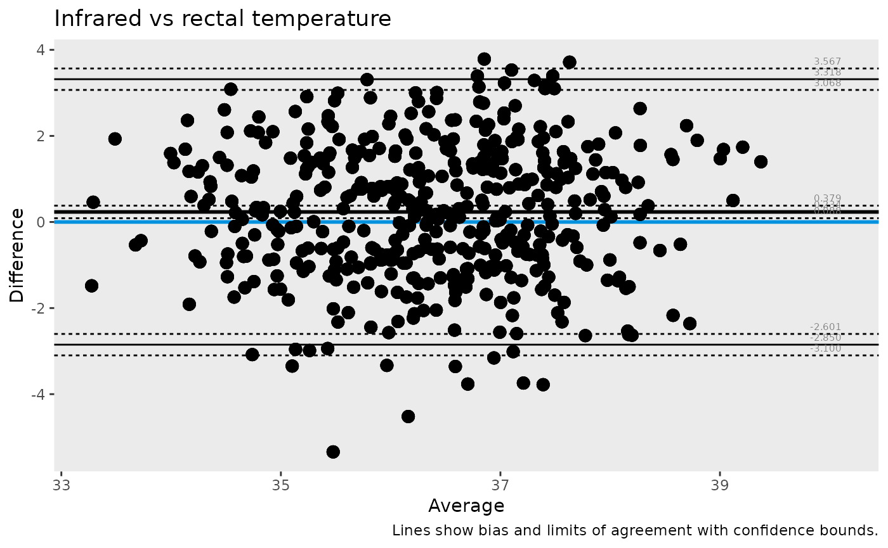

What this guide covers
This short guide walks through a complete Bland-Altman workflow:
- reshape long-format data into paired columns
- compute agreement statistics
- visualize agreement with one line of plotting code
1) Prepare paired measurements
temperature contains one row per animal, visit, and
measurement method.
To compare two methods directly, pivot to wide format.
tbl <- temperature |>
pivot_wider(names_from = method, values_from = temperature)
head(tbl, 6) |>
kable(digits = 2)| animalID | treatment | visit | rectal | infrared |
|---|---|---|---|---|
| 1 | healthy | baseline | 33.89 | 34.82 |
| 1 | healthy | visit 1 | 34.57 | 36.49 |
| 1 | healthy | visit 2 | 35.44 | 36.22 |
| 1 | healthy | visit 3 | 35.41 | 35.72 |
| 1 | healthy | end of treatment | 35.68 | 35.06 |
| 2 | vehicle | baseline | 37.62 | 38.59 |
2) Compute Bland-Altman statistics
stats_tbl <- ba_stat(tbl, infrared, rectal)
stats_tbl |>
tidyr::pivot_wider(names_from = parameter, values_from = value) |>
kable(digits = 3)| n | bias | lloa | uloa | bias.lcl | lloa.lcl | uloa.lcl | bias.ucl | lloa.ucl | uloa.ucl |
|---|---|---|---|---|---|---|---|---|---|
| 450 | 0.234 | -2.85 | 3.318 | 0.088 | -3.1 | 3.068 | 0.379 | -2.601 | 3.567 |
The most commonly interpreted quantities are:
-
bias: average difference between methods -
lloaanduloa: lower and upper limits of agreement
3) Plot agreement
ba_plot(
data = tbl,
var1 = infrared,
var2 = rectal,
title = "Infrared vs rectal temperature",
caption = "Lines show bias and limits of agreement with confidence bounds."
)
#> Warning: Using `by = character()` to perform a cross join was deprecated in dplyr 1.1.0.
#> ℹ Please use `cross_join()` instead.
#> ℹ The deprecated feature was likely used in the ggBA package.
#> Please report the issue to the authors.
#> This warning is displayed once per session.
#> Call `lifecycle::last_lifecycle_warnings()` to see where this warning was
#> generated.